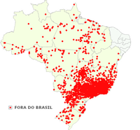
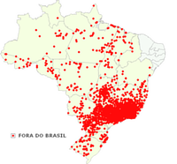
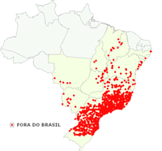
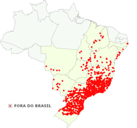
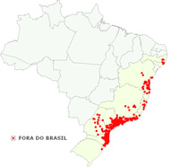
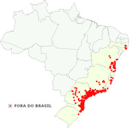
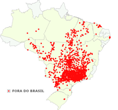
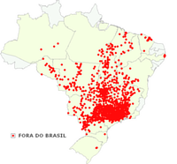

Maritaca
Maritaca é um termo popular para se referir as diversas espécies de aves da família dos psitacídeos. Dependendo da região, as maritacas são assim denominadas para as aves de médio porte, menores que os papagaios.
Dentre as diversas formas populares e regionais, a maritaca é também chamada de maitaca, baitaca, cocota, humaitá, maitá, sôia, suia, caturrita, entre outras tantas.
Quanto menor o grau de conhecimento em relação as diferenças entre as aves, a tendência é chamar de maritaca ou maitaca, todo o psitacídeo menor que o papagaio. Nesta lista, portanto podem entrar tanto as maitacas do gênero Pionus, como periquitões e jandaias do gênero Aratinga, como até mesmo os periquitos do gênero Brotogeris. Não seria de estranhar que atribuíssem esta denominação genêrica e generalizante, mesmo para um tuim (Forpus xanthopterygius). Os mais velhos e os habitantes da zona rural conseguem fazer uma distinção clara entre as diversas espécies e sabem diferenciar uma maitaca de um periquitão e de um periquito. Com a urbanização e com o pouco contato com a natureza perdeu-se este referencial. E como veremos abaixo, esta denominação é uma questão histórica e arraigada em nosso meio por nossa formação cultural.
Nas várias acepções do Dicionário Houaiss, temos para o termo maitaca, que é sinônimo de maritaca:
- Substantivo feminino
- 1 Rubrica: ornitologia. Regionalismo: Brasil. design. comum a diversas spp. de aves psitaciformes, da fam. dos psitacídeos, neotropicais, cujo corpo atarracado e cauda curta são semelhantes aos do papagaio; baitaca, humaitá, maitá, maritaca, sôia, suia.
- 1.1 Rubrica: ornitologia. Regionalismo: Brasil. ave da fam. dos psitacídeos (Pionus menstruus) que ocorre da Costa Rica à Bolívia e ao Sudeste do Brasil, de plumagem verde, cabeça, garganta e peito anterior azuis, crisso e mancha no meio da garganta vermelhos [sin.: curica, maitaca-azul, maitaca-de-barriga-azulada, maitaca-de-cabeça-azul, maitaca-de-cabeça-roxa, maitaca-do-norte]
- 1.2 Rubrica: ornitologia. Regionalismo: Brasil. ave da fam. dos psitacídeos (Pionus maximiliani) que ocorre em grande parte do Brasil, com cerca de 27 cm de comprimento, cabeça verde-anegrada, bico amarelo de base negra e partes inferiores da cauda vermelhas [sin.: maitaca-bronzeada, maitaca-de-face-verde, maitaca-de-garganta-azul, maitaca-de-maximiliano, maitaca-do-sul, maitaca-verde
- 2 (1899)Regionalismo: Pernambuco e São Paulo. pessoa que fala sem parar; maritaca, papagaio, tagarela
- Etimologia
tupi mbai’ta ‘espécie de papagaio’, comp. de mba’e ‘coisa’ e ‘ta red. de ‘taka ‘ruído, barulho’; tb. adp. baitaca, maitá, maritaca etc.; f.hist. 1721 maitáca, 1783 maitacas
Abaixo seguem alguns exemplos que ajudaram na diferenciação das várias espécies:
Psittacara leucophthalma - periquitão-maracanã
 

Psittacara leucophthalmus (Psittacara leucophthalmus)
Registro de periquitão-maracanã no WikiAves
WA187809 – Detalhar som
O periquitão-maracanã possui a cabeça com forma “oval”. Coloração geral verde com os lados da cabeça e pescoço com algumas penas vermelhas, apenas as coberteiras inferiores pequenas da asa são vermelhas, sendo as grandes inferiores amarelas, chamando muito a atenção em voo, região perioftálmica nua e branca, íris laranja, bico cor de chifre clara, pés acinzentados. Tamanho médio 32cm. Nos jovens as penas vermelhas da cabeça e sob as asas são ausentes, sendo de cor verde.
Habita florestas úmidas, semi-úmidas, pântanos, florestas de galeria e palmares de Buriti nas Planícies, até 2500 m. Não frequenta regiões com rios de águas escuras, e em geral encontra-se em terras baixas. Voa em bandos de 5 a 40 indivíduos. Dormem coletivamente em variados lugares.
À leste dos Andes, desde a Colômbia e Venezuela até o norte de Argentina e Uruguai, incluindo parte da Amazônia e em quase todo o Brasil.
Pionus maximiliani - maitaca-verde
 

Pionus maximiliani (Pionus maximiliani)
Registros de maitaca-verde no WikiAves
WA186764 – Detalhar som
A maitaca-verde pesa cerca de 260g e mede 25 cm. Tem a cabeça cinza-azulada, abaixo do pescoço tem uma faixa roxa, bico amarelado, asas verdes e ponta do rabo vermelho. Emite vocalização muito similar a do papagaio-verdadeiro (Amazona aestiva). A subespécie P. m. siy (presente na Bolivia) é mais escura na cabeça, com a parte de trás verde-amarelado e o azul da garganta mais claro.
Vive em uma variedade de hábitats que incluem florestas úmidas, de galeria, savanas e áreas cultivadas, até os 2.000 m. Geralmente gregário, voam em bando de 6 a 8 indivíduos, por vêzes até de 50 aves quando a comida é abundante. Costumam banhar-se em lagos para se refrescar. É um dos mais abundantes psitacídeos em sua área de ocorrência.
Ocorre desde o Nordeste, Centro-oeste e Sudeste do Brasil, Paraguai, Bolívia até o norte de Argentina.
Brotogeris tirica - Periquito-rico
 

Periquito-rico (Brotogeris tirica)
Registros de periquito-rico no WikiAves
WA114113 – Detalhar som
O periquito-rico apresenta uma coloração amarronzada na parte superior da asa. Também não tem penas amarelas no encontro, apenas algumas mais claras. Também conhecido como periquito, periquito-verdadeiro, periquito-verde. Típica da Mata Atlântica. Ocorre no Brasil Oriental, de Alagoas e da Bahia ao Rio Grande do Sul.
Brotogeris chiriri - periquito-de-encontro-amarelo
 

Periquito-de-encontro-amarelo (Brotogeris tirica)
Registros de periquito-de-encontro-amarelo no WikiAves
WA106184 – Detalhar som
O periquito-de-encontro-amarelo tem o encontro realmente amarelo e a pele branca que contorna o olho muito mais desenvolvida. Na parte superior da asa de B. chiriri, as partes escuras são muito mais discretas, tendendo à tons de verde oliváceo ou verde amarelado. Também conhecido como periquito-de-asa-amarela e periquito-estrela. É encontrado no Brasil Central e Oriental, Norte, Oeste e Sul da Bolívia, Nordeste da Argentina (Chaco, Formosa e Misiones), Leste do Paraguai, Uruguai e Peru. No território nacional, ocorre desde o Sul ao extremo do Pará (Serra do Cachimbo), Ceará, Maranhão, Bahia, Minas Gerais, Pantanal, Rio de Janeiro e São Paulo.
Para os desavisados será considerado como sendo Brotogeris tirica, com o qual é extremamente parecido, exceto pela marca amarela no ombro. Para complicar é comum vê-lo na cidade de São Paulo junto a esses periquitos. Torna-se a espécie predominante mais para o norte e oeste do estado.